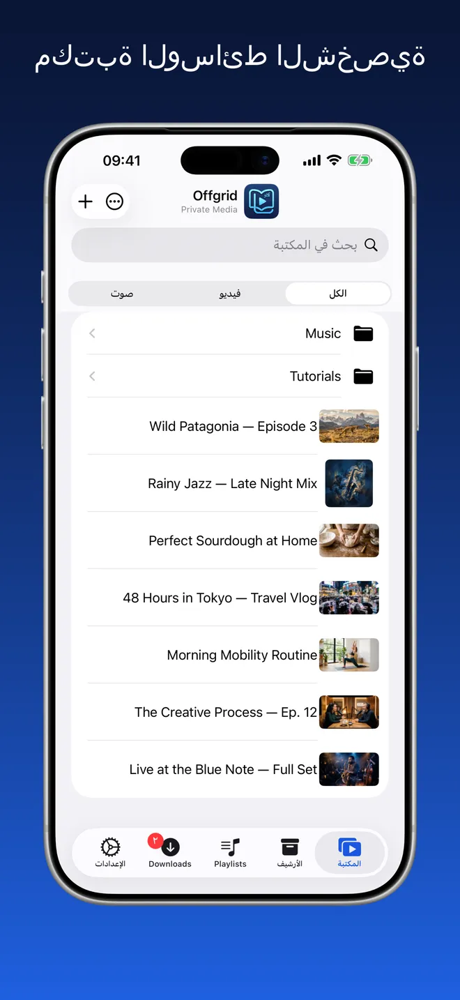
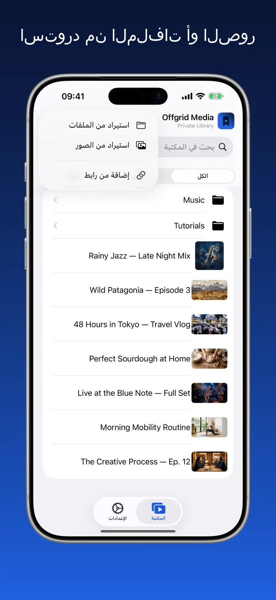
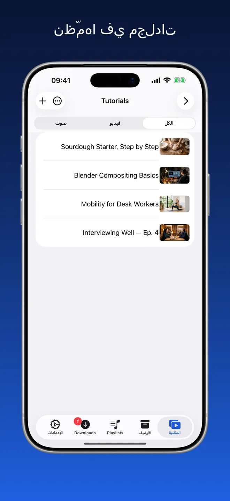
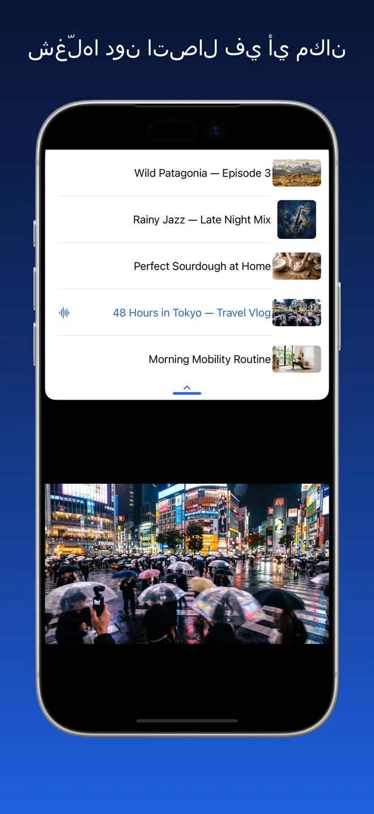
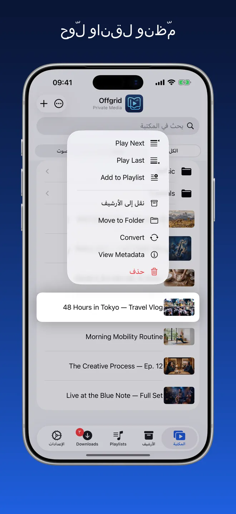
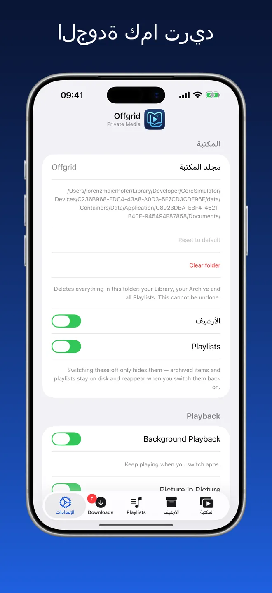

Offgrid Media · مكتبة خاصة
كل ما تحتفظ به،
دون اتصال.
أحضِر مقاطع الفيديو والصوت التي لديك بالفعل — من الملفات أو من الصور أو عبر رابط يحق لك الاحتفاظ به — وشغّلها كلها دون اتصال في مكان واحد مرتّب.
جرّبه. الشبكة مغلقة — ومكتبتك تعمل رغم ذلك.

مكان واحد مرتّب للوسائط التي تملكها
مجلدات وبحث وتصفية حسب الفيديو أو الصوت. الصور المصغّرة تُستخرج من الملف نفسه، وتُحفظ صور الأغلفة والبيانات الوصفية.





استورد، نظّم، شغّل
استورد من الملفات أو الصور
نظّمها في مجلدات
شغّلها دون اتصال في أي مكان
مشغّل حقيقي، وليس مجرد مجلد ملفات
كل ما يلي يعمل والشبكة مغلقة.
الاستيراد من الملفات والصور
أضِف الفيديو والصوت من iCloud Drive أو من جهازك أو من مكتبة صورك. يصل كل شيء إلى مكتبتك جاهزًا للتشغيل.
نظّمها بطريقتك
أنشئ مجلدات وانقل العناصر بينها وابحث في كل ما احتفظت به. صفِّ حسب الفيديو أو الصوت عندما تريد التركيز.
مصمّمة للعمل دون اتصال
بمجرد وصول العنصر إلى مكتبتك يبقى على جهازك. بلا تحميل مؤقت، وبلا حاجة إلى اتصال، وبلا أي بث من أي مكان.
مشغّل حقيقي
شغّل بالترتيب أو عشوائيًا، وتابع من حيث توقفت، ورتّب قائمة التشغيل، واستخدم ميزة صورة داخل صورة أثناء استخدامك لتطبيقات أخرى. تُحفظ صور الأغلفة والبيانات الوصفية.
الصوت في الخلفية
واصِل الاستماع عند تبديل التطبيقات أو قفل الشاشة.
اختر الجودة
اضبط الجودة المفضلة مرة واحدة في الإعدادات — الأفضل المتاح أو 720p أو 480p أو 360p أو الصوت فقط.
الفصول
الوسائط التي تحتوي على فصول تحصل على قائمة فصول في المكتبة وشريط فصول أسفل المشغّل، لتنتقل مباشرة إلى الجزء الذي تريده.
مجلدات كاملة بخطوة واحدة
استورد مجلدًا فيصل مع مجلداته الفرعية كما هي — انسخه أو انقله من موقعه الأصلي. حدّد عدة عناصر معًا لإضافتها إلى قائمة تشغيل أو أرشفتها أو نقلها أو حذفها.
ما تستخدمه فقط
أوقف الأرشيف أو قوائم التشغيل من الإعدادات فتختفي من التطبيق. لا يُحذف أي شيء — أعد تشغيلها وستجد كل شيء كما كان.
بلا حساب. بلا إعلانات. بلا تتبع.
يحفظ Offgrid كل شيء محليًا على جهازك. لا يُرفع شيء ولا يُشارك شيء ولا حاجة إلى أي حساب.
لا شيء يُجمع، لأنه لا توجد جهة تُرسل إليها
Offgrid Media بلا حساب وبلا خادم خاص به. ويعلن بيان الخصوصية في App Store أنه بلا تتبع وبلا أي بيانات مجمّعة.
الأسئلة الشائعة
لا. بمجرد وصول العنصر إلى مكتبتك يبقى على جهازك ويعمل والشبكة مغلقة. لا يُبث شيء أثناء التشغيل، فلا تحميل مؤقت ولا اتصال يمكن أن ينقطع.
في مجلد على جهازك ضمن مساحة التطبيق. يمكنك اختيار مجلد مكتبة آخر من الإعدادات، ولأن التطبيق يدعم تطبيق الملفات فبإمكانك تصفح الملفات نفسها هناك. لا يُرفع شيء ولا توجد مزامنة سحابية.
الاستيراد من الملفات (iCloud Drive أو الجهاز)، أو الاستيراد من مكتبة الصور، أو الإضافة عبر رابط يحق لك الاحتفاظ به — الصق الرابط داخل التطبيق، أو استخدم قائمة المشاركة في المتصفّح واختر Offgrid Media. الاستيراد هو المسار الأساسي، والإضافة عبر رابط مجرد وسيلة ثانوية.
نعم. فعّل الصوت في الخلفية من الإعدادات ليستمر التشغيل عند تبديل التطبيقات أو قفل الشاشة، مع العنوان وصورة الغلاف وعناصر التحكم في شاشة القفل ومركز التحكم. ويمكن للفيديو أن يطفو فوق التطبيقات الأخرى بميزة صورة داخل صورة. كما يعمل الفيديو بملء الشاشة، وعلى iPad يستمر التطبيق بجانب تطبيق آخر في وضع Split View.
لا. ليس لـ Offgrid Media حساب ولا خادم ولا تحليلات ولا حزم طرف ثالث. ويعلن بيان الخصوصية في App Store أنه بلا تتبع وبلا أي بيانات مجمّعة. والإذن الوحيد الذي يطلبه هو الإشعارات.
لا شيء. بلا اشتراك، وبلا عمليات شراء داخل التطبيق، وبلا إعلانات.
يُرجى إضافة المحتوى الذي يحق لك الاحتفاظ به فقط. الالتزام بشروط خدمة أي منصة وبالقوانين المعمول بها يقع على عاتقك وحدك.
مكتبتك. جهازك. بلا حاجة إلى إشارة.
Offgrid Media مجاني، لـ iPhone وiPad، وبـ 11 لغة.